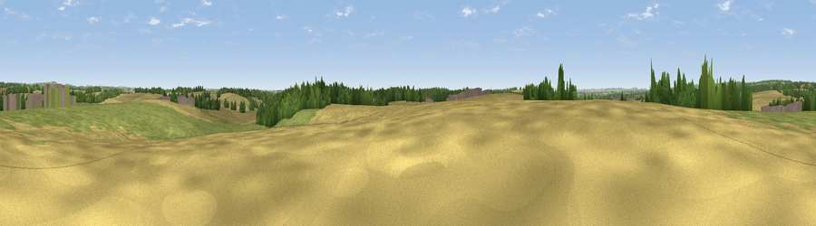

Tinker's Hill
#33118 in England · top 52% of its area beats it · near Picket PieceThe view, rendered

A 360° render of this exact spot computed from the terrain model, tree cover and land cover — summer colours, afternoon light, calibrated against photographs of famous viewpoints. Real trees, hedges and buildings will differ in detail.
The panorama
Grey silhouette: terrain skyline in each direction (720 bearings, Earth curvature and refraction included). Dashed green: skyline with trees (+15 m) and buildings (+8 m) as obstacles. Blue strip: how far the ground is visible on each bearing.
Where the view opens
Wedge length = distance to the farthest visible ground on that bearing (vegetation-aware). Rings at 10, 25 and 50 km.
What fills the view
47% cropland · 37% grassland · 15% woodland · 1% built-up
Angular shares of the visible panorama (visual magnitude), not map area. Landscape diversity 0.46 (0–1 Shannon).
Key numbers
More beautiful places nearby
The staircase of upgrades: each row has a higher view potential than everything closer. Driving times are estimates from straight-line distance, calibrated against real road routing — check an actual route before setting out.
| Place | Direction | Drive | Score |
|---|---|---|---|
| Bere Hill | SW · 3 km | ~7 min | 43.7 |
| Stoke Hill | N · 4 km | ~10 min | 48.2 |
| Viewpoint near Upton | NNW · 8 km | ~16 min | 50.1 |
| Viewpoint near Old Burghclere | NNE · 10 km | ~19 min | 57.3 |
| Viewpoint near Old Burghclere | NNE · 11 km | ~20 min | 67.5 |
| Viewpoint near Old Burghclere | NNE · 12 km | ~22 min | 68.7 |
| Beacon Hill | NNE · 12 km | ~22 min | 76.7 |
| Martinsell viewpoint | NW · 28 km | ~44 min | 77.3 |
51.22201, -1.42803 · source: osm peak · position refined by local search. Computed location — check access rights before visiting.